「应用UX体验标准」是什么？
优秀的应用体验来源于良好的UX设计。「HarmonyOS应用UX体验标准」从影响用户体验的各个维度定义了应用需要达到的准则要求，您的应用需至少满足下述标准要求中的必选条目，才可获准在应用市场上架。请在应用的设计开发过程中仔细检查应用的各个方面是否满足这些要求。
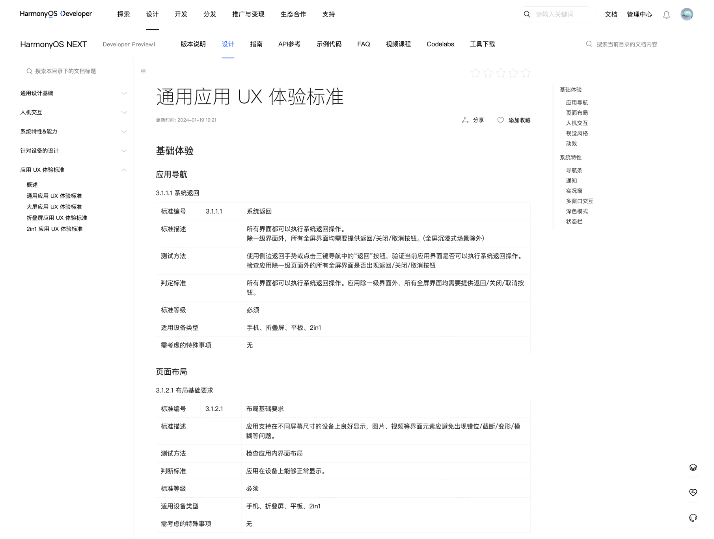
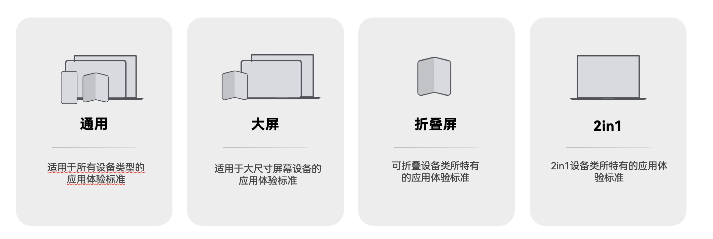
布局基础要求
应用支持在不同屏幕尺寸的设备上良好显示，图片、视频等界面元素应避免出现错位/截断/变形等问题。
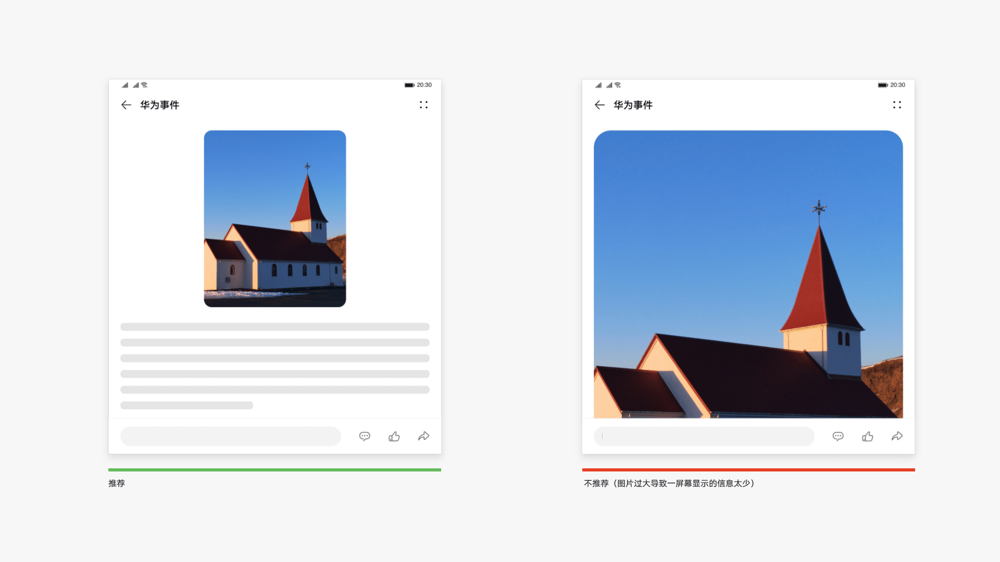
挖孔区适配
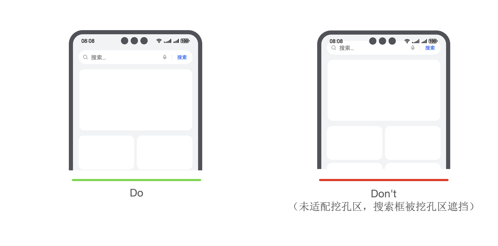
避免与系统手势冲突
应用使用的手势应避免与系统手势冲突。不要设计可能跟系统手势冲突的手势操作，如屏幕边缘手势、指关节手势、三指及以上的手势。
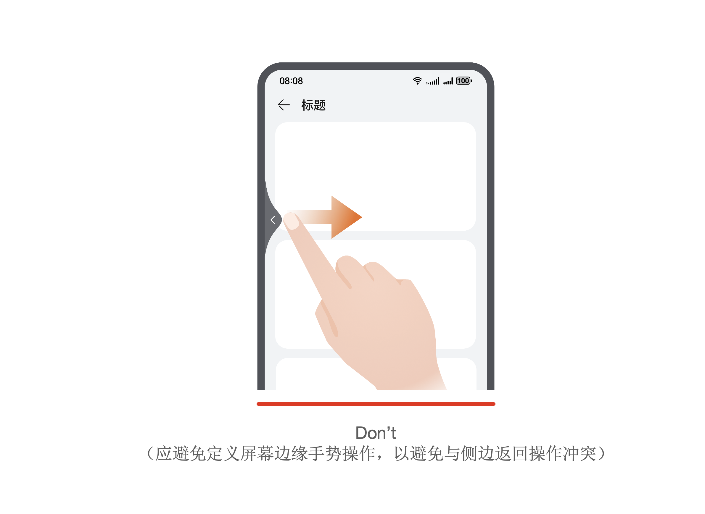
典型手势时长设计
应用使用的典型手势设计需满足相关参数约束：
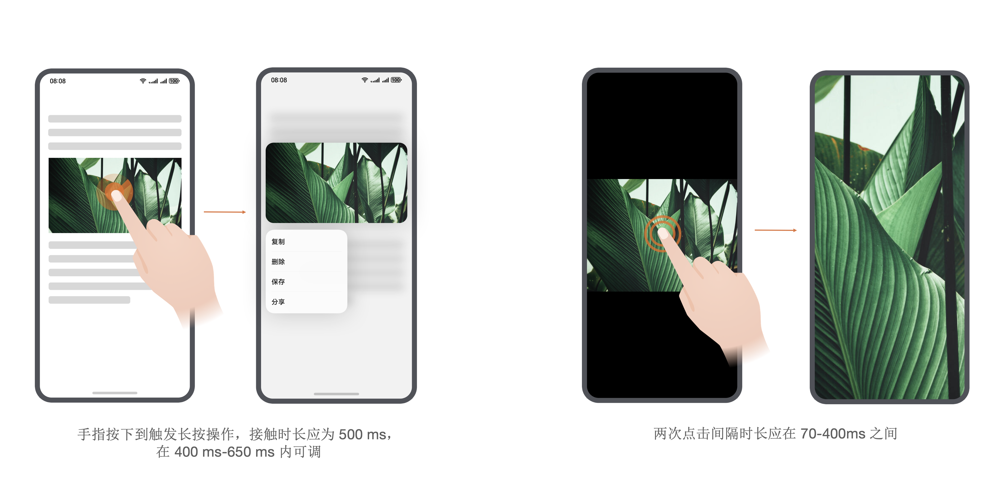
点击热区
点击热区需满足最小尺寸要求：主要交互元素或控件的可点击热区至少为48vp×48vp(推荐)，不得小于40vp×40vp(必须)。
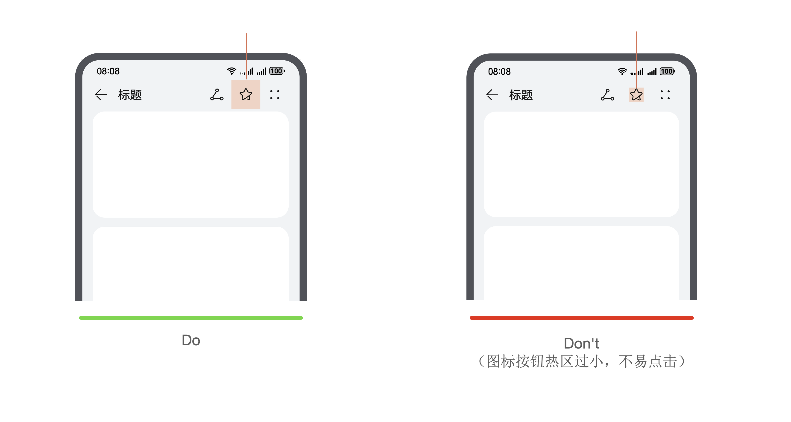
色彩对比度
应用使用的色彩需满足最小对比度要求：
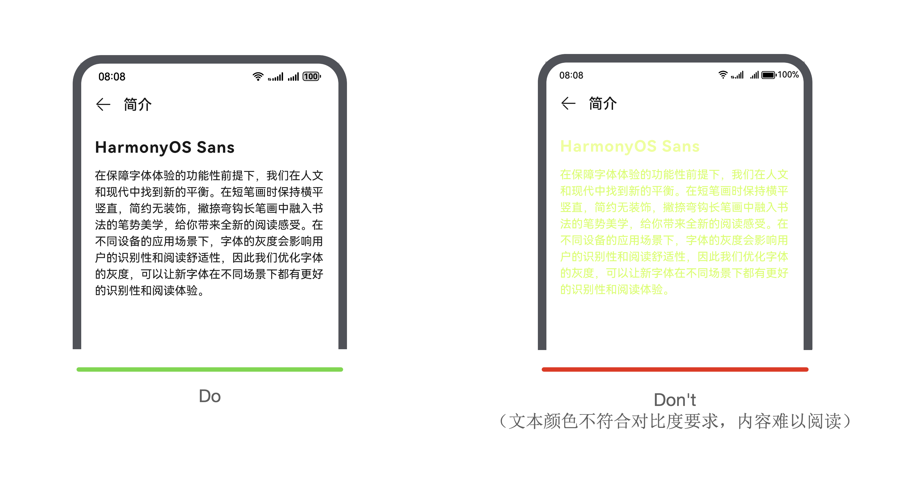
字体大小
应用的文字大小需满足最小字号要求：文本字号不小于12fp(推荐)，最小不得小于8fp(必须)。
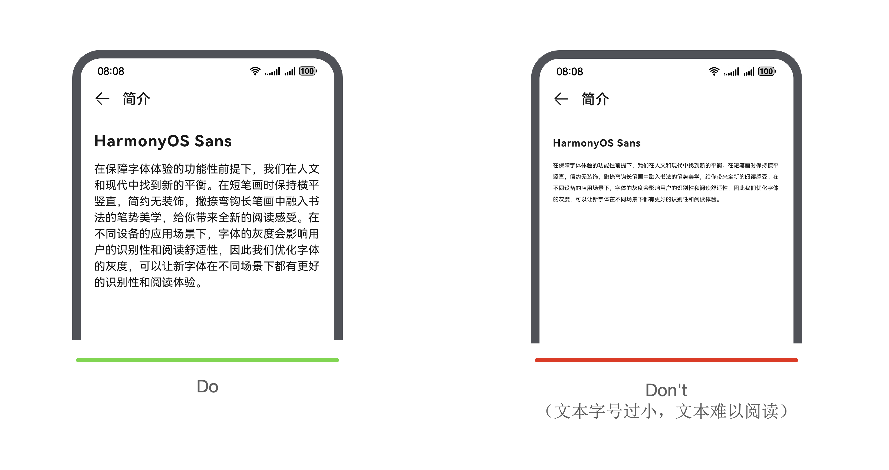
应用图标
应用图标需分层，尺寸需满足规范要求：应用图标需分为前景图和背景图两层，尺寸要求为288px*288px，图标可见区域尺寸默认为192px*192px。
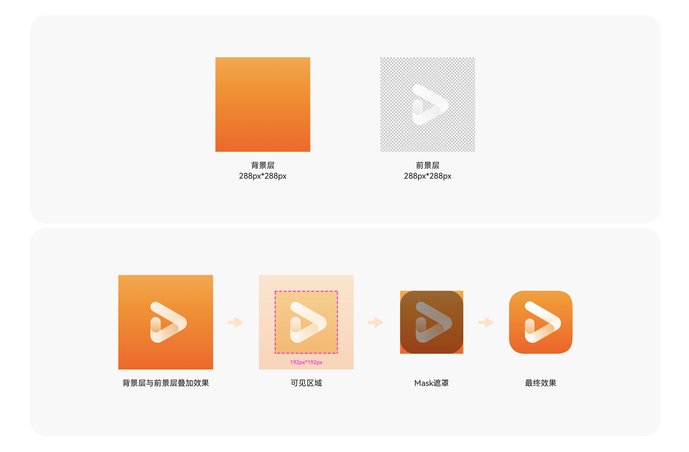
界面图标
应用的界面图标大小需满足最小尺寸要求：图标大小不小于12vp(推荐)，最小不得小于8vp(必须)。
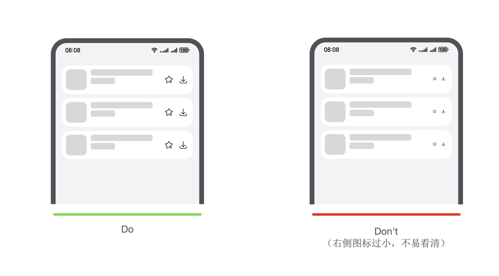
图标清晰度
图标需保证清晰可辩，无明显模糊、拉伸、压缩、锯齿等情况。
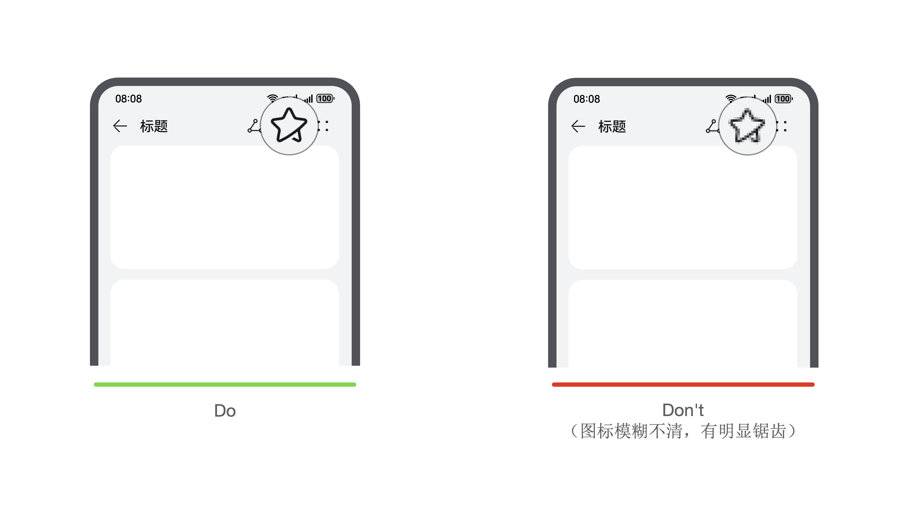
底部导航条适配
手机、折叠屏、平板等设备屏幕底部有导航条，应用需对底部导航条进行适配：
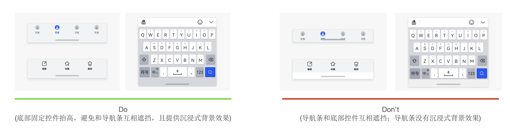
多窗口交互
分屏运行时，需确保应用布局显示良好，无元素显示异常问题。
应用支持分屏比例调节，比例调节时需确保元素无变形挤压的情况出现。
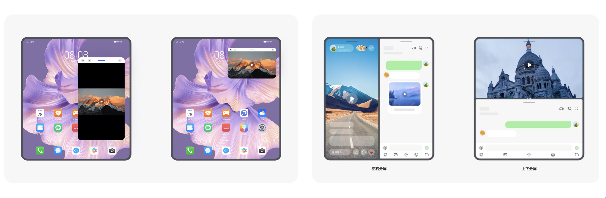
深色模式
应用需支持深色模式显示，确保系统切换到深色模式后，界面以深色风格呈现，并且界面内没有因未适配导致的识别性问题。
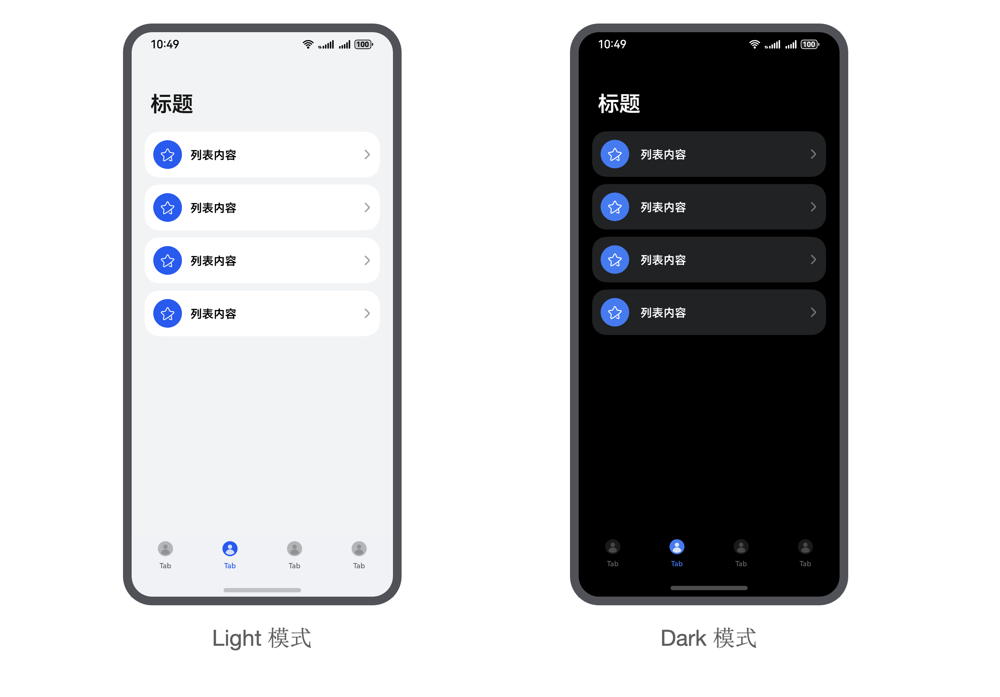